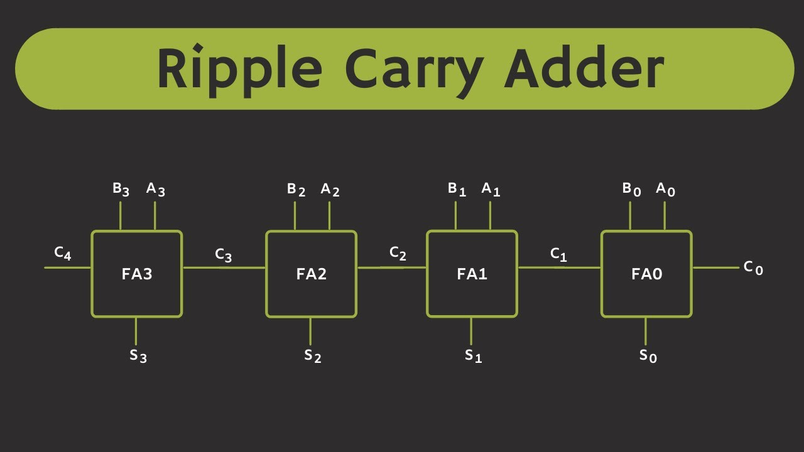

Half Adder

Combines two 1-bit inputs A and B to produce Sum and Carry.
- Boolean: Sum = A ⊕ B, Carry = A · B
Truth table
Full Adder

Adds three 1-bit inputs A, B, and Cin. Outputs Sum and Cout.
- Boolean: Sum = A ⊕ B ⊕ Cin
- Cout = (A · B) + (Cin · (A ⊕ B))
Truth table
Ripple-Carry Adder (RCA)
Chains multiple Full Adders. Carry ripples from least significant to most significant bit.
- Delay grows linearly with number of bits (O(n)).
- Sumᵢ = Aᵢ ⊕ Bᵢ ⊕ Cᵢ, Carryᵢ₊₁ = AᵢBᵢ + Cᵢ(Aᵢ ⊕ Bᵢ)
Try a 4-bit RCA below:
Carry Lookahead Adder (CLA)

Uses generate and propagate terms to compute carries in parallel.
- Generate: Gᵢ = Aᵢ · Bᵢ
- Propagate: Pᵢ = Aᵢ ⊕ Bᵢ
- C₁ = G₀ + P₀C₀, C₂ = G₁ + P₁G₀ + P₁P₀C₀, ...
Explanations and boolean expressions are provided above. Diagram slot uses your PNG.